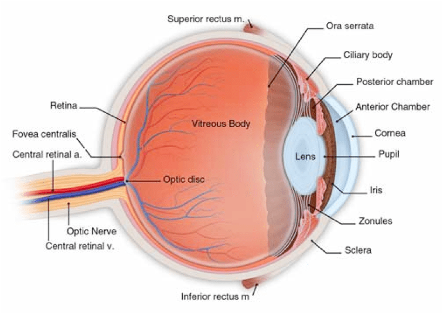

Focal Point: The Fovea in Relation to UI/UX

The central fovea appears as a small flat spot at the retina's center. It's about 1.5 mm in diameter and contains about 199,000 cones/mm squared.
The 'Foveal Region' of our eyes covers only about 2% of our visual field, but it's where we see detail and color the most clearly. It's the reason we move our eyes and scroll on screens.
Marketing expert David Zheng found that in over 60% of cases, visitors give up and leave a website in less than 15 seconds.
How can we use this for better user interfaces?
Marketing expert David Zheng found that in over 60% of cases, visitors give up and leave a website in less than 15 seconds.
Want the most important content/navigation in the ‘foveal region’? Place it according to how users scan pages.